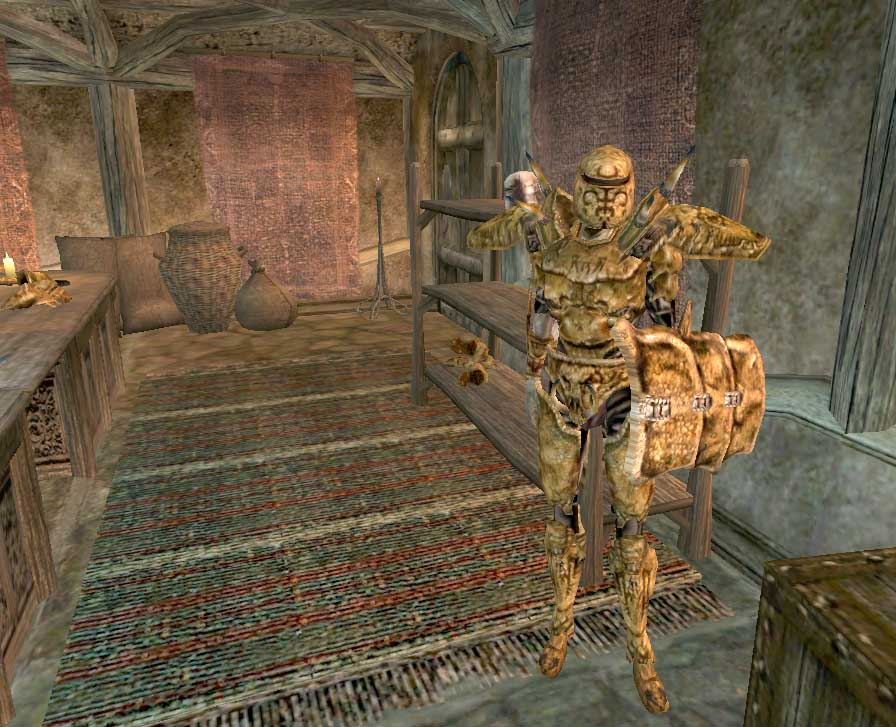
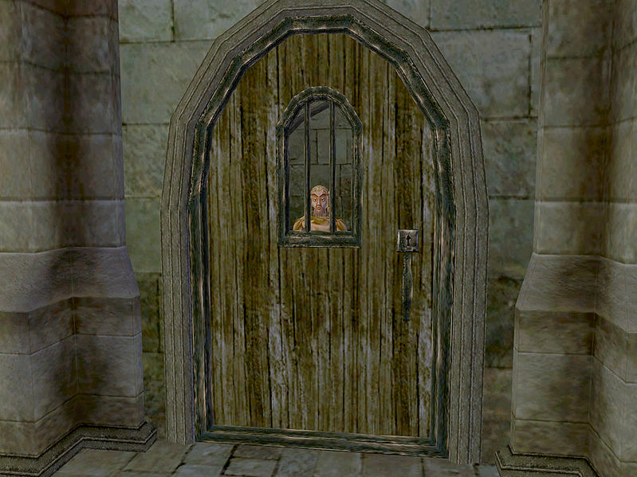
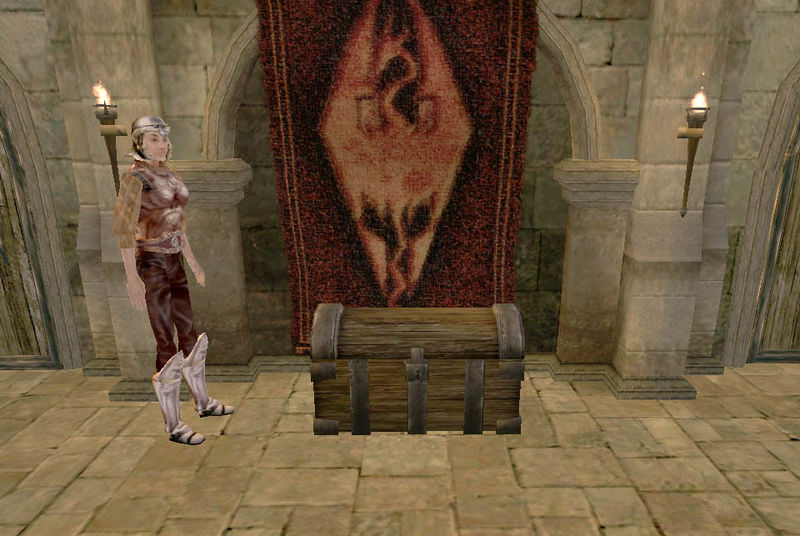

Like most places, Vvardenfell has laws. Your character can break them for both fun and profit (and sometimes because quests require it), but it would be wise first to know the potential consequences. Ignorance is not an excuse.
If you speak with people on the topic of a little advice for long enough, you will begin to piece together what constitutes a crime in Morrowind, and it's fairly straightforward. Keep in mind that any illegal act is really only a potential crime, as a crime that goes undetected or unreported has no direct impact on your character. The moment an NPC reports your misdeeds, however, you will incur a Bounty and will be subject to arrest by Guards, as described in the Punishment section.
Many items in the world belong to someone. An item's owner is not explicitly revealed by the game, but it can usually be guessed with a little common sense; Items in a store belong to the shopkeeper, items in a home belong to the occupant, and so forth. The act of taking (or removing from an inanimate container) an item that belongs to someone else is a crime. Books and other reading materials are an exception, as they can be picked up and read freely as long as you do not choose to "Take" them.
When your menus are open, you may click on items not in your inventory and move them. This counts as theft, even if you do not actually take the item.
The Morrowind concept of trespassing is only a crime to unlock, or attempt to unlock, an owned locked door or container by any method, including spells and scrolls. Unlocking or attempting to unlock doors or containers that have no owner yields no bounty. Entering an area, or opening a door, even if the door was originally locked, is not a crime. Untrapping carries the same consequences as unlocking.
Usually, attempting to sleep in an owned bed will simply present you with a warning message and nothing more. However, sleeping in an owned bed is in fact always a crime. You will rarely receive a bounty for this because the NPCs usually found around beds, homeowners, servants and the like, have an alarm value of 0, meaning they will not attack you or report your crime. Certain beds, especially after Bloodmoon is installed, are owned by guards, and attempting to sleep in them will instantly gain you a 5 gold bounty if you are seen. This usually only happens if you are in the same cell as the guard, but if another member of a faction you belong to sees you, you will be expelled from the faction as well. This is most common in the Imperial Legion and the East Empire Company, where many of the faction members are also guards. Unfortunately, there is no way to know if a bed is owned prior to attempting to sleep in it, so if you are unsure, make sure to save your game first.
It is important to note that certain guild members don't mind if you sleep in their bed. Others, however, do mind. While you'll get a warning message and incur no bounty, you will be expelled from the guild.
If you are in Sneak mode when you "activate" an NPC, you will attempt to pick their pockets rather than talk to them. Each item picked up from their inventory is potentially a separate crime. However, only the victim will report a pickpocketing, and they will only notice an attempt that fails. Any items you had previously succeeded in lifting will remain yours for the moment, but they are still owned by the victim, so beware of an impending arrest.
Initiating an attack on an NPC is a crime. Defending yourself is not. Be aware that your first hit does not have to connect with the NPC for it to be considered assault - you only have to be aiming at them when you swing. Also, be careful when using area effect spells, as you will be charged for assault if the spell affects any peaceful NPCs. See Disposition for advice on getting an NPC to attack first, and see the NPCs page for general information about combat with NPCs. Be wary of using Calm spells, as each new attack which happens during or after the effect of the calm spell is considered a separate assault. If your sneak is high enough, you can attack NPCs without getting an assault bounty. This does not work on guards, however.
Killing in self-defense is not a crime; but killing an NPC that you assaulted is a very serious one, and it is considered separate from the assault. The "good" news is that once they are dead, they no longer own their inventory, so you can loot their corpse without incurring additional bounty. Sneak Criticals will usually not net you a murder bounty if you killed the NPC in the first hit, even if they were in plain sight. However, depending on your sneak skill, you may receive an assault bounty. A murder bounty can be obtained without a direct combat kill. For example, selling an item of clothing or armor with a constant effect Damage Health enchantment to a merchant can eventually kill them, as merchants will equip any item that is of higher quality than what they are currently wearing. If another NPC witnesses their death, you will be charged with murder.
This action is not exactly a crime, but still carries a slight penalty. When attempting to rest in a city, town or inside an owned cell (such as a shop or house), the player will see a message on their rest options that informs the player that resting is illegal here. While you can still wait, you will not regenerate any health or magicka, and cannot level up. You will not incur a bounty while waiting. Some locations are bugged and will claim it is illegal to rest in them, even though they are not protected by law.
Through theft and picking pockets, you can end up with items that belong to other people. There are other items that you are not supposed to possess under any circumstances, even if they don't belong to anyone.
|  Most shops are guarded. |
Morrowind always knows who owns an item and never forgets. You, on the other hand, have to guess at the owners and rely on your own memory to remember what you stole from whom. If using the PC version, you can use the console command "TFH" or "ToggleFullHelp" to see the list of owners and scripts attached to objects. Ownership can be removed from items if they become enchanted.
Ownership comes into play when you pay off your Bounty to a guard or go to jail, at which time all items that belong to someone else are removed from your inventory. It comes into play even more strongly when you barter with merchants. If you are careless enough to attempt to sell to someone an item that they own, they will immediately report your crime, which is treated as "retroactive theft".
An unusual quirk of this rule is that it applies to all items of the type that you stole, even if you get rid of the stolen ones and acquire others legally. Thus if you steal diamonds from Nalcarya of White Haven during a certain quest for the Thieves Guild, any diamond you acquire at any point for the rest of the game is marked as being stolen from Nalcarya. This is true even if you dispose of any extra diamonds you didn't give to Habasi, by selling, dropping, alchemy, etc. You simply may not sell diamonds to Nalcarya ever again, or she will accuse you of theft.
There are two substances banned by Morrowind provincial law: Moon Sugar and the drug refined from it, Skooma. The Barter command of most merchants will not work as long as either of these items is in your inventory. However, the possession is not technically a crime, as no one will ever report it, and guards won't even take them from you when you're arrested (unless you have stolen them before, in which case, they will all be flagged as stolen). Also, merchants don't mind if you just set the stuff down on their floor while you do business. Some merchants, though only if they are Khajiit or Creatures, will still barter while you have these substances in your inventory.
Often your character can commit crimes with no direct repercussions, if they are careful to remain unobserved. If an NPC spots you, however, they will report your crime and raise an alarm. Most victims will also attack you. An alarm will often bring other characters within earshot running to attack you, and it will almost always bring any Guards within earshot running to arrest you. The moment the crime is reported, you will incur a Bounty, whether a guard responds or not. If one does respond and catches up to you, you will be given the options of paying your Bounty, going to jail, or resisting arrest.
|  Jail Time |
Your total Bounty is an amount of gold determined by the severity of all your crimes that have been reported, as listed above. You can view your Bounty on the Stats menu at any time. If you have any amount of Bounty, you will have to answer for your crimes any time you speak to a guard (of any sort, other than mercenaries such as those at Dren Plantation), even if you managed to avoid arrest when committing the crimes. If your Bounty is more than 1,000, guards will confront you on sight. If it's more than 5,000, they will attack you on sight. A significant Bounty can also affect other NPCs' dispositions toward you.
When an alerted guard collars you, you can opt to pay off your full Bounty. It resets to zero, and you are free to go, but not before all stolen items are removed from your inventory. The game's definition of "stolen" may be much more expansive than what you expect (see elsewhere in this article for details), so it is safest to drop all gear when fessing up. If you speak to a guard without an alarm being raised, you automatically turn yourself in; all "stolen" goods are still removed but your bounty is paid off with a 10% discount. You can also remove your bounty at half price if you are a member of the Thieves Guild. In each guild "house" (typically a shady cornerclub), there is a single Thieves Guild member who can deal with your bounty through the dialogue topic price on your head. These are Phane Rielle in Balmora, Tongue-Toad in Ald'ruhn, Rissinia in Sadrith Mora, and Crazy-Legs Arantamo in Vivec.
If you are a member of the Morag Tong, and incur bounties for assaulting and murdering the target of your quest, you may present an Honorable writ of execution to any guard in order to get rid of the bounty. If you're playing the Tribunal expansion, you may also receive 3 royal writs when accepting the Evidence of Conspiracy quest given to you by Tienius Delitian; due to an apparent bug, these writs will clear any bounty.
If you can't or won't give up the cash, you can pay your debt to society with hard labor served in Imperial workcamps instead. Again all your stolen items are confiscated, and a length of game time will pass. Your term is equal to 1 day for each 100 gold of your Bounty (with a minimum of 1 day). When it is up, you will be released with no bounty. For each day served you will lose one skill point from a randomly chosen skill as a result of physical, mental, or emotional punishment. (When Security or Sneak are chosen, the skill actually goes up one level instead.)
If you resist arrest, you get to keep all your gold and all your items, but the guard will attack you. Unlike Oblivion and Skyrim, you have no way to yield once this happens. You can only try to take them down or outrun them. Note that there is an oversight at this point in that killing a guard while resisting arrest is not considered murder. With high Disposition, there are some instances where a Guard will walk off after taking the first swing, but this is likely due to a bug in the script.
If you have a bounty of 5,000 or more gold, you have earned a Death Warrant. You no longer have the option of paying it off or going to jail; guards will attack you on sight, and two ways out are to go to a Thieves Guild member and have them remove it.
If you talk to an Ordinator or High Ordinator while wearing Indoril armor (specifically, the helmet or cuirass) the Ordinator will say that the armor is sacred to the Order and that you will die for wearing it, and from then on, every Ordinator or High Ordinator you meet will come after you for the rest of your life. There is no way get off the deathlist after this happens. Though wearing the armor will earn you the wrath of the Ordinators, you will never actually get a bounty, as it is not considered a crime by the game.
All stolen goods that have been confiscated from you by a guard can be found at the Imperial Legion Fort that the guard who caught you was employed by. A simple method of finding out exactly which fort your goods went to is to go to jail for a petty crime. This makes time pass in game and you decrease a small amount in a random skill, so be warned. Alternatively, you can cast Divine Intervention from the scene of the crime, which should take you to the correct fort in most cases. (Unless you're near Seyda Neen, which has an evidence chest but no Divine Intervention marker.) Confiscated items will be in a chest marked "Evidence" with a level 50 lock on it. This lock will be relocked every time you get items confiscated by a guard (if it has been unlocked by you). As if that wasn't enough, there is someone nearby to catch you if you try to break into the chest. Some of them can be taunted into attacking and killed but some have something interesting enough about them to need them alive. Following is a list of the forts, where to find the chests, and any pertinent information.
Note that Evidence chests are "owned" by any Imperial Legion member ranked Knight Protector or higher. This means that if you are ranked Knight Protector or above in the faction, you can actually lockpick and take back your items from an Evidence Chest in plain sight, and it won't count as stealing. Keep in mind that contraband taken back in this manner will still usually retain ownership tags, so owning the Evidence chest won't prevent stolen items from being confiscated again in the future.
The Buckmoth evidence chest is found at Buckmoth Legion Fort, due south of Ald'ruhn, in the Prison (southeastern tower). It's being guarded by a respawning guard and the Guard Captain. They can be Commanded to leave with you, or simply killed. The Buckmoth Prison Cell Key is on the bench nearest the trapdoor. If you can stealthily grab it, the guards can be locked up in a prison cell where they will remain indefinitely so you don't have to always kill the spawned guard.
The Hawkmoth evidence chest is found in the Hawkmoth Legion Garrison building at Ebonheart. It's all the way downstairs, being guarded by Sirollus Saccus. Sirollus has the distinction of being the master trainer of the Armorer skill, despite the fact that he doesn't offer to train due to an oversight (see Master Trainers). Now before you go thinking you can kill him off since he doesn't even offer his masterful training, he also sells/restocks the only Secret Master's level Armorer's Hammer in the game, Sirollus Saccus' Hammer. If you feel no need for this, you can just kill him. Otherwise, a Command Humanoid spell can get him to follow you somewhere he can't see you. You could even lock him up in one of the nearby prison cells! There's also a couple people who walk around, sometimes into the area with the chest. Be aware of them. Another option would be to open the evidence chest, gaining a bounty of 5 gold, hiding behind the archway and using a telekinesis spell to lift the items out of the chest without Sirollus Saccus seeing you. You can now proceed to drop your stolen loot out of sight, walk up to any guard, pay your fine, grab your loot again and walk away.
|  The Evidence Chest in Moonmoth Legion Fort |
The Moonmoth evidence chest can be found in the Prison Towers. There are several doors marked as such, but the particular room in question doesn't connect to the others. It can only be accessed from within the Interior building in the room downstairs with Larrius Varro, down another set of stairs behind a door. The chest is being guarded by Solea Nuccusius, an unimportant woman who isn't involved in any quests. She can be taunted into attacking you to get her out of the way so the chest can be looted at will. An alternative solution that doesn't involve killing anyone is to open one of the cells to the right of the chest and position yourself so you can see the chest but not the guard (and she can't see you). From inside the cell you can lockpick and loot the chest completely undetected by using a Telekinesis spell or potion.
The Pelagiad evidence chest is in the South Tower. The easiest way to find the chest is to enter the main building from the front and then go down the tower stairs to the south. There's a level 95 locked door there. If you can't unlock this door, go into the eastern most door marked "South Tower" in the main building. Follow the stairs down going in the first room on your right. At the back of this room is a cell door leading to a hallway with the chest. There's no one in this particular section, but if you leave the door open one of the guards is bound to come walking in so close the door. You could always just kill them too.
The evidence chest used by the Seyda Neen guards is in the Census and Excise Office. It's in the same room as Socucius Ergalla, right behind Ganciele Douar.
The easiest way to find the Wolverine Hall evidence chest is to take the Guild Guide to Sadrith Mora. Exit and follow the stairs down to the Fighters Guild. The chest is in a back room. There's quite a few people in here but thankfully the chest is somewhat hidden. Someone may come back there and catch you, so be careful. Saving before trying anything is always a good idea.
Despite this being the Divine Intervention terminus for most of the area north of Red Mountain, and despite this being the only place you can actually join the Legion in the first place, there is no Evidence Chest in Gnisis's Fort Darius.If arrested by the guards in Gnisis, Khuul, Ald Velothi or Dagon Fel, jail time will be served, and stolen goods collected, at the Buckmoth Legion Fort outside Ald-ruhn: the Telvanni town guards on the east coast and eastern isles all answer to Sadrith Mora's Wolverine Hall.